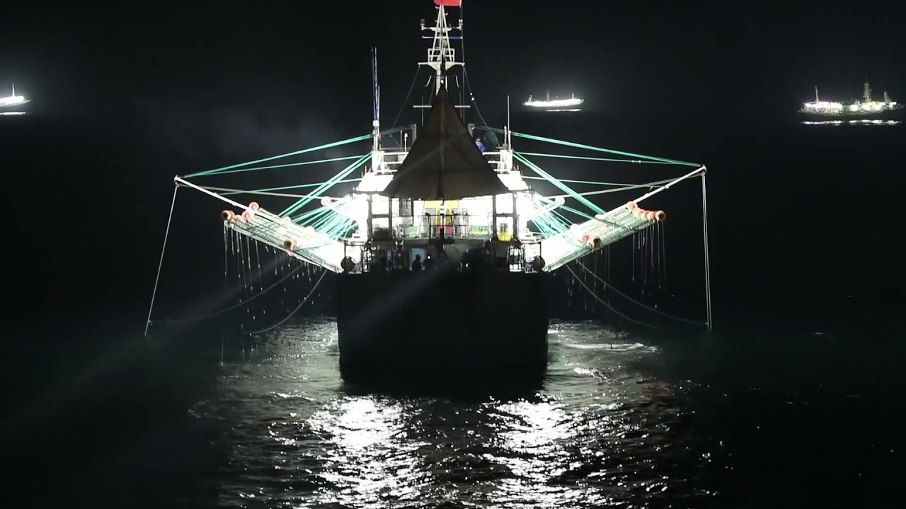

La ciudad de las luces
Dentro del problema general de la pesca indiscriminada, la depredación de los recursos naturales no renovables y la devastación de especies consideradas con poco valor comercial que sufren la fauna y flora marítima en todo el Atlántico Sur, la República Argentina es particularmente afectada, además, en sus intereses económicos por una enorme cantidad de buques pesqueros de gran porte, que se instalan justo en la línea donde finalizan las 200 millas que limita la Zona Económica Exclusiva Argentina (ZEEA) en las que sólo este país tiene autorizado pescar.
La cantidad de barcos es tal, que sus luces pueden verse a gran distancia a la noche, presentando una imagen similar a la skyline de cualquier gran urbe moderna.
Metodología de la depredación
Los buques poteros llegan, en su mayoría de China, con combustible y equipamiento subsidiado por su país de bandera. Siempre en convoy y acompañados de un buque de apoyo logístico. Estos buques normalmente "compran" bandera a Panamá y los únicos que usualmente pasarían una inspección frente a un abordaje por parte de prefectura, ya que solamente llevan combustible y alimentos.
En la mayoría de los casos solamente el Capitán y algún oficial corresponde al país de bandera del navío, ya que la tripulación normalmente son Filipinas, Indonesia y algunos países africanos. En su gran mayoría con salarios ínfimos y casi en situación de esclavitud. Hay muchísimas denuncias de abuso, trata y esclavitud por parte de tripulantes capturados.
Los recursos ictícolas más buscados en la zona son: 1. Merluza Hubbsi. 2. Calamar Illex Argentinus. 3. Merluza de Cola. 4. Langostinos.
Estos se encuentran en gran cantidad en esta área, principalmente del lado Argentino, ya que por la enorme cantidad de buques en la zona se vuelve cada vez más díficil la captura de ejemplares. Es por esto que traspasan los límites de la ilegalidad y se adentran en la ZEEA.
Es importante destacar que también ocurre pesca ilegal por buques Argentinos, pero son escasos, por la sencilla de razón de que no rinde económicamente llegar hasta la milla 200, si tienen buen "pique" a las 100 millas de la costa argentina. Implicaría un gasto innecesario de combustible. Los navíos Argentinos que incursionan en la ilegalidad, lo hacen mediante la pesca no declarada, para evitar impuestos.
|  |
|---|
| Imágen de un buque potero y sus reflectores |
Los buques poteros entran en acción principalmente a la noche, cuando prenden sus grandes reflectores, con el objetivo de confundir a la fauna y atraerla a la superficie pensando que es de día. De ahí el fenómeno visual de la milla 200. Ante la presencia de Prefectura se quedan operando sobre la linea de la milla 201, esperando el momento para cruzarla y comenzar a extraer.
Todo navío tiene que estar registrado y transmitiendo al AIS (Sistema de identificación automática), el transmite la posición en tiempo real de un bardo para que otros barcos estén al tanto de la misma y así evitar colisiones. La implementación del mismo esta exigida en buques de más de 300 toneladas brutas, que realizan viajes internacionales. Lo que ocurre en la zona en es cuestión, es que gran parte de los buques, principalmente quienes tienen intenciones de cruzar el límite, apagan el AIS y solo pueden ser identificados visualmente,.
Existen 3 tipos de pesca irregular en la zona:
- Pesca ilegal, "realizada por buques nacionales o extranjeros en aguas bajo la jurisdicción de un Estado, sin el permiso de éste o contraviniendo su legislación"
- Pesca no reglamentada. Lo que ocurre sobre la milla 201, donde se hace caso omiso de todas las normativas y reglamentaciones para proteger la biodiversidad y sustentabilidad de los recursos.
- Pesca no declarada, cuando un barco realiza la actividad sin declararlo ante la autoridad nacional competente.
Intentos de control
La prefectura naval argentina indica 5 buques guardacostas operativos, para el patrullaje marítimo, según se consigna en el Resumen operativo de prefectura naval argentina.
Además, el patrullaje se encarga a un buque, y luego es relevado en punto intermedio por otro. Es decir, solo se encuentra un buque guardacosta patrullando el límite marítimo a todo momento.
Las operaciones de identificación de incursiones ilegales se realizan siempre acompañadas de apoyo aéreo de la misma prefectura. Un avión sobrevuela la zona, y ante el avistaje de alguna incursión o un aprontamiento, notifica al buque guardacosta. Una vez en la proximidad de la zona, y con identificación visual, el buque guardacosta indica por radio que debe desistir de su curso y tomar rumbo a aguas internacionales. Ante caso omiso de la indicación, previa autorización de cancillería, se efectúan disparos de salva de advertencia. No se puede efectuar disparos a partir de la milla 201.
Desde 1986 a 2020 se capturaron 80 buques.
Es importante destacar el aspecto legislativo. La pesca ilegal, según las leyes argentinas, no constituye un delito, sino una infracción. Es decir la pena por pescar ilegalmente en el territorio argentino, es una multa que se paga con Gasoil, en función del cargamento en bodega. Con una base imponible de $25 millones de pesos. En el resto del mundo,la pesca ilegal es un delito penal.
Algo a tener en cuenta, es que estas embarcaciones reciben apoyo logístico de países de Latinoamérica. Entre ellos, destaca Uruguay, principalmente porque el puerto de Montevideo es un punto clave de reabastecimiento. Allí no deben abonar ningún impuesto de circulación y tampoco inspecciones.
Por otro lado Panamá, "vende" su bandera a embarcaciones logísticas. De esta manera evita restricciones e impuestos que deben pagar en su país de origen. Panamá opera lo que se conoce como un registro abierto. Su bandera ofrece las ventajas de registro más fácil (a menudo en línea) y la capacidad para emplear mano de obra extranjera más barata. Además los propietarios extranjeros no pagan impuestos sobre la renta.